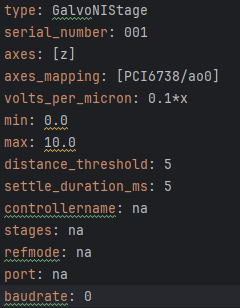
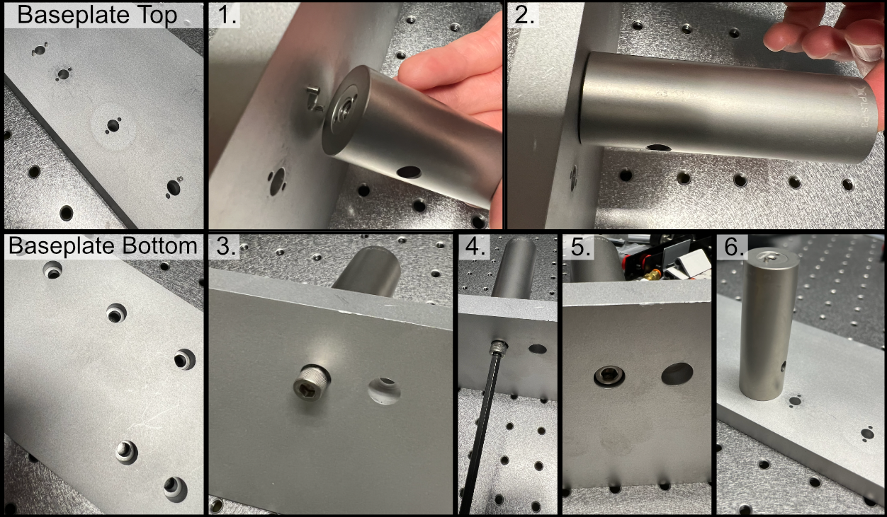
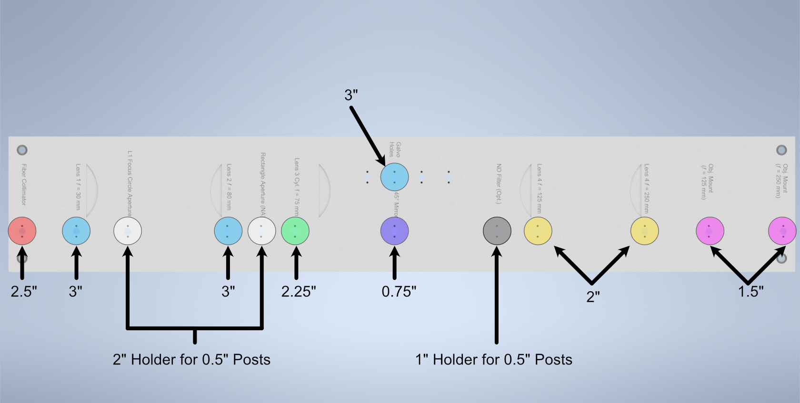

Hardware and Physical Assembly
Hardware
Piezo Setup & Troubleshooting
On the PCI Board, connect the positive and negative wires to the corresponding analog output (AO) you want, in our case we used AO 0, so we connected the positive wire to pin 10 and the ground to pin 11, then plug the BNC cable connected to those wires into the EXT IN input on the Tiger controller panel corresponding to the piezo.

Plug the piezo cable into the PIEZO input on the Tiger controller panel corresponding to the piezo.
Verify the range of the piezo in the tiger controller software with the command “5 cca x?”
- At first, ours output the following:
This tells us that our Piezo (Panel 5/Q) corresponded to P1 or a 100 um range, but ASI requires the piezo needed to be set to a 50 um range to be able to be intitialized instead. To change this, we used the command “5 cca x = 34” and power cycled the controller.
- Then our output became:
Now we can see that the piezo is set to the correct range (Pf). With that verified, now confirm that the voltage output from the PCI Board is working:
With the voltage output of the PCI board verified, plug the PCI Board voltage cable output back into the EXT IN slot and verify that the position output of the Piezo reads similarly on the oscilloscope:
Plug a BNC Cable into the SENSOR OUT connection on the tiger controller panel.
Plug the other end of that cable into the oscilloscope.
Verify that a sinewave output is seen on the oscilloscope.
If the PCI Board voltage is working as intended but the piezo position output doesn’t seem to work, try ensuring that the piezo is set in External Input mode, and not Controller Input mode:
- Use the “PM Q?” (Our piezo corresponds to Q) command:
the output was “Q = 0” originally, telling us that it’s in Controller Input mode
- Use the “PM Q = 1” command to set the piezo into External Input mode:
now the output of “PM Q?” is “Q = 1”
Another important step is to ensure that the configuration file associated with Navigate is appropriately set up for your piezo. This involves setting the correct axis and voltage-to-distance mapping for the piezo. As an example our configuration file for Navigate looks like the following for setting up our piezo:
Physical Assembly
Note on Difference in Simulated and Physical Coordinate Definitions
It should be noted briefly that when discussing our physical microscope systems using Navigate software, the definitions for the coordinate axes is different than that of our simulations. This is due to a difference in standardized definitions for the axes in our previous systems and how Zemax defines these same axes. This difference is depicted in the picture below:

Baseplate Assembly Process
Our baseplate design was made with ease of assembly in mind. The basic process involves aligning Polaris posts with dowell pins and screwing them using 1/4”-20 Screws in at the predetermined hole locations on the breadboard. This general process is depicted below:
We used various different Polaris post sizes in our assembly based on what element was being mounted on them. Also worth noting is that three elements are designed to be placed on 0.5” posts and as such require 0.5” post holders at their designated locations: the L1 focus iris, the rectangular aperture after L2, and the ND filter after the 45 degree mirror. The overal breakdown of which size posts went with each hole location is listed below:
To either mount the baseplate onto an optical table or onto separate posts, the process is similar in that just requires screwing 1/4”-20 screws into either an optical breadboard or onto separate posts at the four corner holes.

Physical Assembly - Visualization of Axes Mapping
In our system we essentially have 5 different translation stages at work: the standard x,y, and z axes, an additional stage along the z axis to control the focus of the detection path (f), and and axis associated with the piezo positioned such that its normal is 60.5 degrees away from the y-axis.